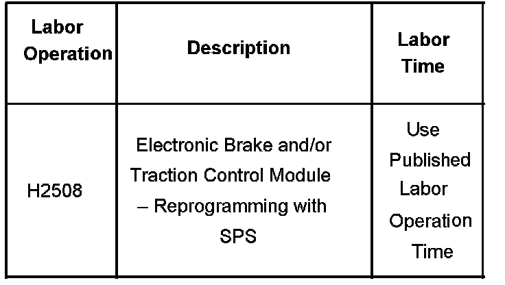

TCS/ABS - Rear Wheel Speed Sensor Data Reversed
Bulletin No.: 06-05-25-004ADate: August 06, 2007
INFORMATION
Subject:
Information on Reprogramming EBCM if Tech 2(R) Data for Rear Wheel Speed Sensors is Reversed
Models:
2007 Cadillac Escalade, Escalade ESV, Escalade EXT
2007 Chevrolet Avalanche, Suburban, Tahoe
2007 GMC Yukon, Yukon XL, Yukon Denali, Yukon Denali XL
Built Prior to May 1, 2006
And Less Than 8600 lb GVW
Supercede:
This bulletin is being revised to include a "built prior to" date and remove the Silverado and Sierra models. Please discard Corporate Bulletin Number 06-05-25-004 (Section 05 - Brakes).
When viewing rear wheel speed sensor information via a Tech 2(R), you may notice that the rear wheel speed data is reversed. The Tech 2(R) will show the left wheel speed data as the right on the Tech 2(R) screen and the right wheel speed data as the left.
This is the result of the Electronic Brake Traction Control Module (EBCM) sending out the signal to the Tech 2(R) with the data swapped.
If this condition is present, DO NOT replace the EBCM. To resolve this concern, reprogram the EBCM with updated calibrations. This new service calibration was released with TIS satellite data update version 5.0.
Select EBCM in the TIS2000 supported controller list as the module. As always, make sure that your Tech 2(R) is updated with the latest software version.
Warranty Information

For vehicles repaired under warranty, use the table.

Disclaimer